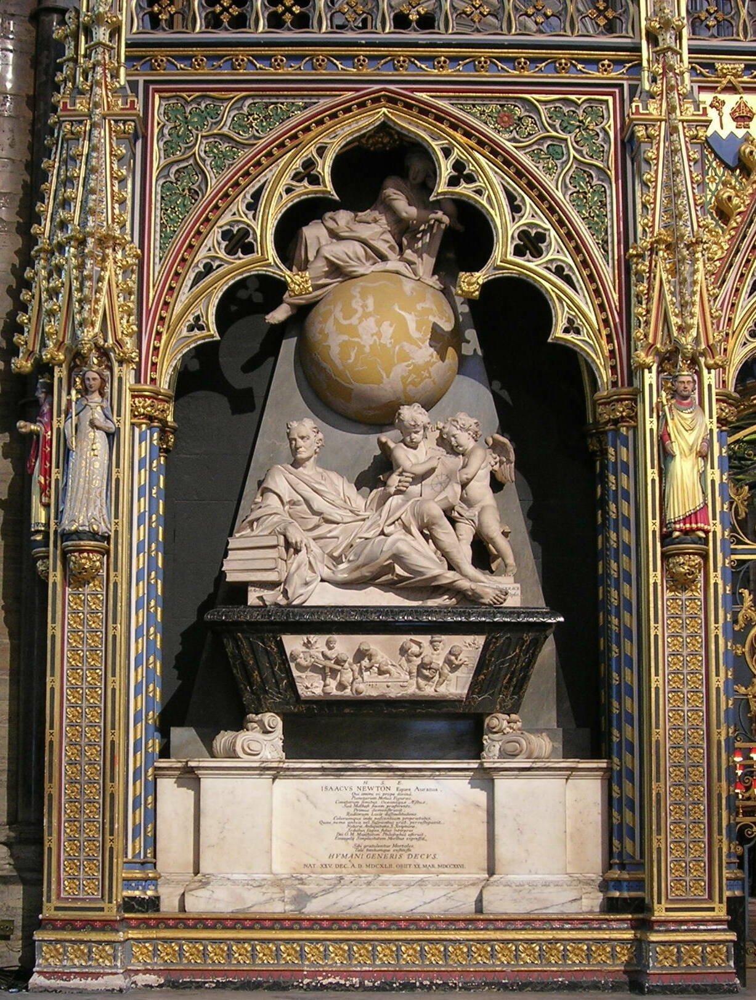
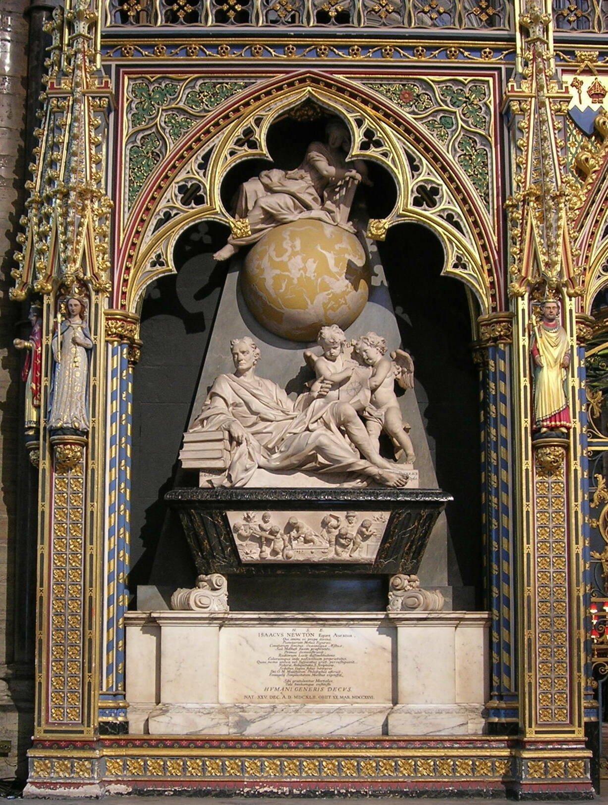

Enlightenment:
The Enlightenment philosophers drew upon a select group of scientific predecessors-Galileo, Boyle, and Newton-to support their application of nature and natural law across physical and social domains, often disregarding historical lessons and social structures. European philosophers and historians view Newton’s *Principia* as a key turning point in the Scientific Revolution and the start of the Enlightenment.
Newton's rational laws of the universe influenced political theories of intrinsic rights (Locke, Voltaire), economic theories of self-interest (physiocrats, Adam Smith), and sociological critiques of imposed historical models. While figures like Monboddo and Clarke initially resisted elements of Newton’s work, they later adapted it to align with their religious beliefs. This intellectual movement centered on reason, nature, and progress, shaping Enlightenment ideology.
 

Works:
- De analysi per aequationes numero terminorum infinitas (1669, published 1711)
- De motu corporum in gyrum (1684)
- Philosophiæ Naturalis Principia Mathematica (1687)
- The Chronology of Ancient Kingdoms Amended (1728)
- An Historical Account of Two Notable Corruptions of Scripture (1754)
- Method of Fluxions (1671, published 1736)
- Arithmetica Universalis (1707)